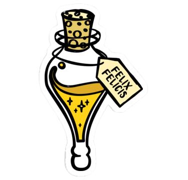
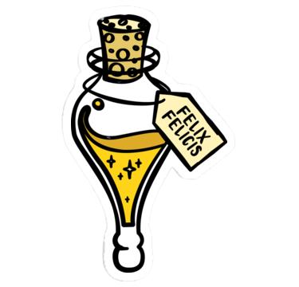
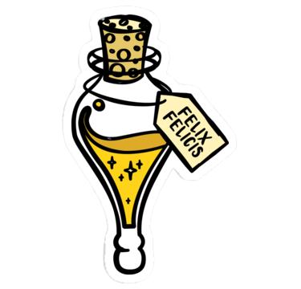
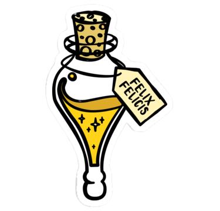

The Game is very simple all you have to do is pop the bubbles , by taping on them. Bubbles will keep on generating. As time passes more and more bubbles will generate faster.If the screen gets covered with more than 75% with bubbles the game ends. The scoring is simple , the bigger the bubble you pop the more points you get.
This are Normal Bubbles. They start spawning as soon as the game starts. To break them you need to tap them just one time.
This are Rock Bubbles. They start spawning after you score gets more than 1000. To break them you need to tap them 5 times.
This is the Felix-Felicis. Your day gets luckier when you use it. The bubbles spawn slowly for 5 seconds. But you can only use it twice.